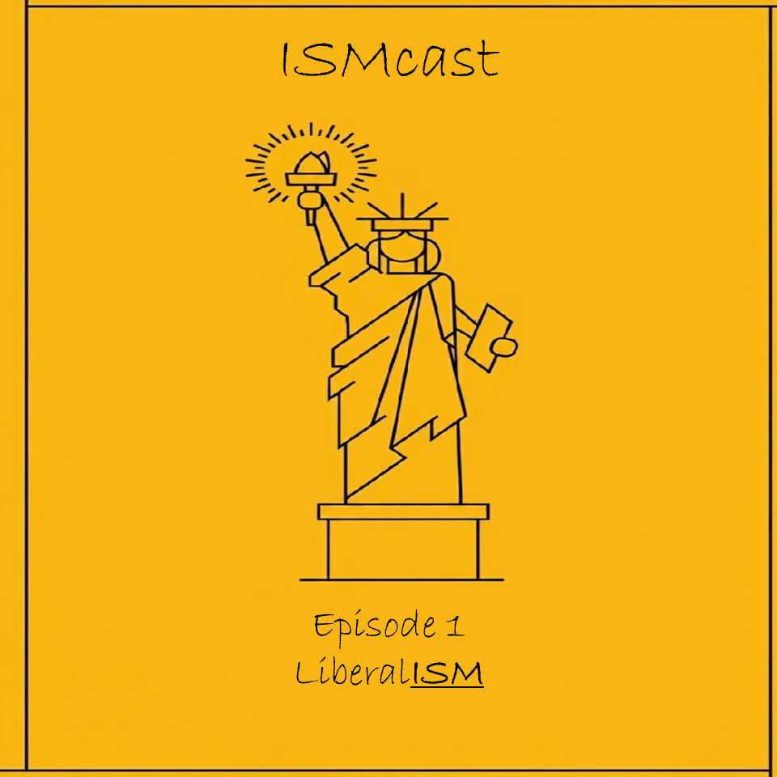
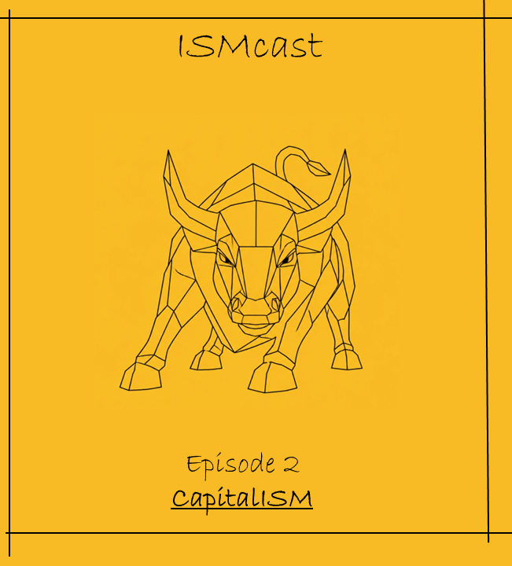
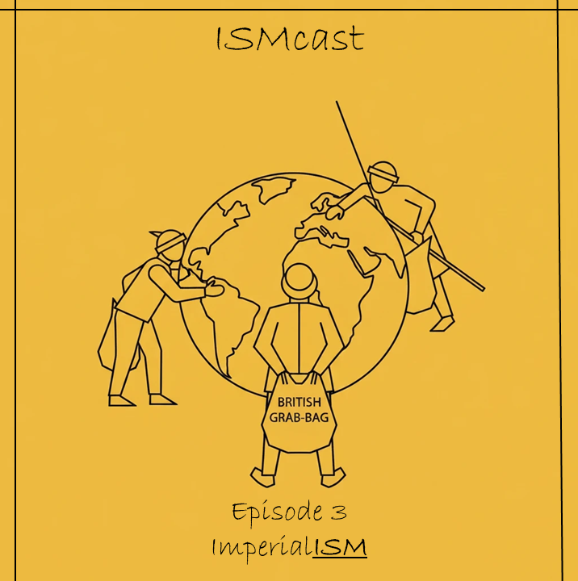
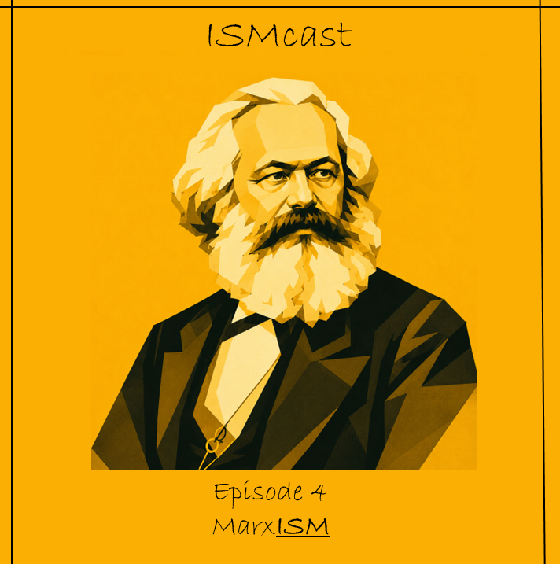
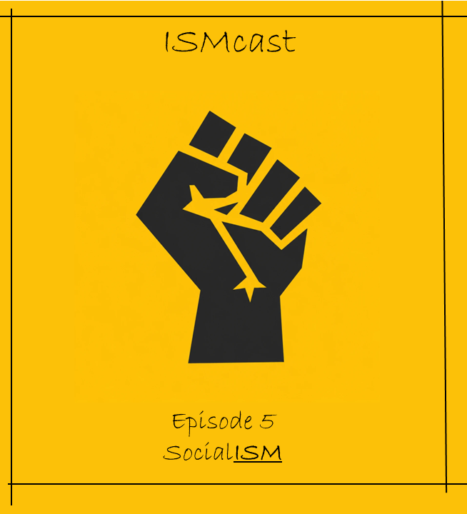
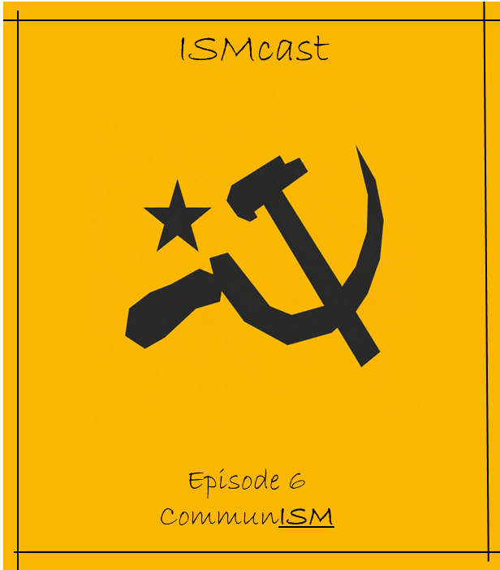
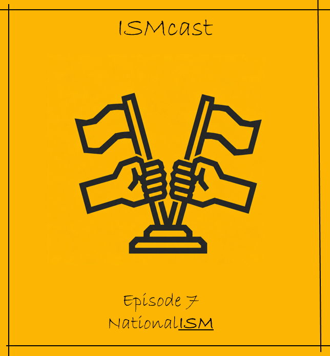
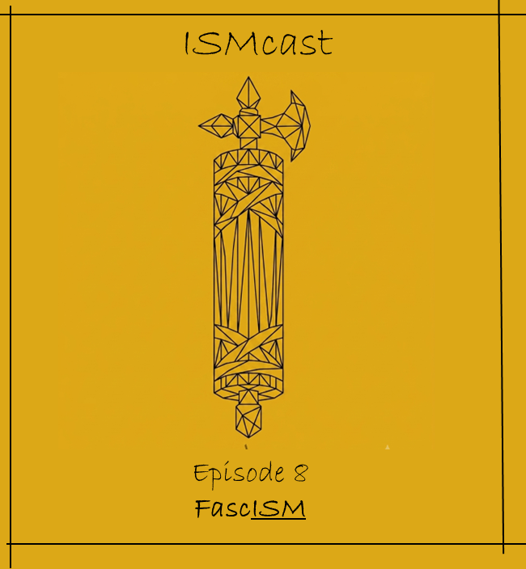

ایسمکست | IsmCast
ایسمکست از یک سوال ساده حین پیادهروی شروع شد:
چرا اینهمه مفهوم مهم در جهان به «ایسم» ختم میشوند؟
پشت پردهی کلمات
این یک شروع است. داستان تولد ایسمکست و ورود به دنیای پسوندهایی که کلید فهم دنیای امروزند.

لیبرالیسم
لیبرالیسم از کجا آمد؟ بررسی ریشههای آزادی فردی، حقوق طبیعی و محدود کردن قدرت دولت.

کاپیتالیسم
ریشههای کاپیتالیسم؛ بررسی تصویر تولید، ثروت و پیشرفت در نظام اقتصادی مسلط جهان.

امپریالیسم
رقابت قدرتهای بزرگ برای منابع و بازارها؛ آیا امپریالیسم آخرین مرحله بقای سرمایهداری بود؟

مارکسیسم
زندگی و تفکرات کارل مارکس؛ مانیفست عصیان طبقاتی و رویای لغو استثمار.

سوسیالیسم
کالبدشکافی سوسیالیسم و سوسیالدموکراسی؛ رام کردن هیولای کاپیتالیسم با دولت رفاه.

کمونیسم
از آرمانشهر مارکس تا لنینیسم؛ چطور رویای جامعه بدون طبقه به دولت متمرکز تبدیل شد؟

ناسیونالیسم
چگونه «ملت» به مهمترین هویت انسان مدرن تبدیل شد؟ همبستگی یا سرچشمه نژادپرستی؟

فاشیسم
چگونه یک ملت آزادیاش را واگذار میکند؟ بررسی ایتالیای پس از جنگ و ظهور موسولینی.

نازیسم
تحلیل ناسیونالسوسیالیسم، توهمات نژادی و برپایی ماشین رعب و جنگ در قرن بیستم.

توتالیتاریسم
کالبدشکافی حکومتهای تمامیتخواه؛ سیطره بر اندیشه، زندگی شخصی و نفوذ در روح جامعه.

آنارشیسم
نفی هرگونه اقتدار و دولت؛ بررسی آرمان جامعه برپایه همکاری داوطلبانه و برابری.